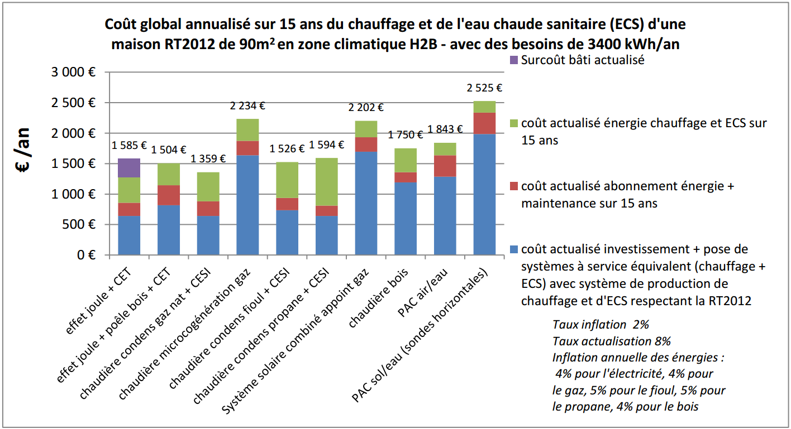
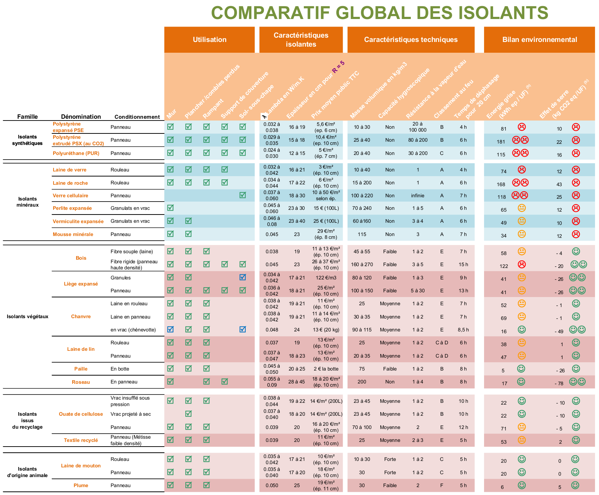

Introduction
Choisir son système de chauffage est une étape importante lors de la construction ou de la rénovation d’une maison, du même que son orientation et les différentes ouvertures de celle-ci. Dans ce dossier nous montrons les différents types de chauffages avec leurs rapports énergétiques et financiers. Ainsi, avec ces données, nous sont à même de choisir le meilleur système de chauffage pour un rendement maximum. S’ajoute au choix du système de chauffage, le système de chauffage de l’eau sanitaire qui n’est pas à oublier et permettrais d’amélioré le rendement du chauffage. De plus, le type de diffusion du chauffage n’est pas à négliger pour maximiser le chauffage et réduire les coûts liés à celui-ci. C’est en considérant toutes ces possibilités que nous obtiendrons le système de chauffage le plus écologique et pertinent.
Modes de chauffage
Le chauffage électrique
Il existe plusieurs types d’appareils de chauffage électrique (convecteurs, panneaux rayonnants, etc.). Les avantages principaux de ce type de chauffage sont : l’installation peu coûteuse et une utilisation simple, notamment avec des dispositifs de programmation et de régulation. Le chauffage électrique présente tout de même quelques inconvénients. Énergivore, la facture d’électricité peut être supérieure de 20 à 25% par rapport au gaz.
Le chauffage au gaz
Ce type de chauffage est assurément plus écologique et économique que l’électricité. Son rendement le rend intéressant pour le chauffage domestique. Ce type de chauffage est efficace longtemps et très rapidement. Néanmoins, selon les travaux à réaliser, l’installation du chauffage au gaz sera plus ou moins onéreuse. De plus, pour profiter de ce type de chauffage, le logement doit être proche du réseau de gaz urbain.
Le chauffage au fioul
C’est une bonne alternative au chauffage au gaz en cas de non raccordement. Il diffuse une chaleur homogène et atteint la température demandée rapidement. Seulement, le prix du fioul augmente de jour en jour, l’installation est coûteuse et ce système pollue.
Le chauffage au bois
Il se fait au moyen d’un poêle ou d’une cheminée. Le chauffage au bois a un pouvoir calorifique important et est très écologique. Son prix varie peu et offre un bon rendement avec un récupérateur de chaleur.
Le chauffage solaire
L’énergie solaire étant gratuite, ce type de chauffage est très écologique. Toutefois l’installation est très onéreuse et nécessite bien souvent un chauffage d’appoint pour compenser le décalage entre la demande et la production de chaleur réalisée.
Le chauffage à chaleur
Ce système fonctionne avec le principe de la géothermie ou de l’aérothermie. Ce principe restitue plus d’énergie que celle consommée. Excepté lors de grand froid où le rendement est moindre. Il sera donc nécessaire d’y ajouter un chauffage d’appoint. Ce type de chauffage reste, quand même, moins polluant que le chauffage électrique et plus économique à long terme.
Choix du mode de chauffage
Le tableau ci-dessous résume les prix de l’énergie par mode de chauffage en kilowatt-heure.
Pour le projet nous avons choisi une pompe à chaleur pour son rendement élevé et son utilisation d’électricité faible nécessaire à son fonctionnement.
Le coût moyen de fonctionnement d’une pompe à chaleur géothermique est de 0.052 € par K/Wh.
Les critères de choix
L'installation
L’installation d’une chaudière, dans le cas de chauffage au gaz, au fioul ou au bois, demande des travaux coûteux entre la pose de l’appareil et la création d’un réseau de canalisation.
Une pompe à chaleur ainsi qu’un système de chauffage solaire nécessite également une installation coûteuse car il s’agit de dispositifs technologiquement plus complexes.
En revanche, l’installation d’un chauffage électrique est peu onéreuse et très simple, il suffit de brancher l’appareil au réseau électrique de la maison.
L'efficacité
Un chauffage électrique a la particularité de se mettre en marche très rapidement cependant la durée du chauffage est limitée contrairement à un chauffage au gaz, au fioul ou au bois, où la chaleur est homogène et reste toute la journée du a l’inertie du système de déploiement.
L'utilisation
Les appareils munis d’un système de chauffage électrique sont les plus simples d’utilisation ainsi que les plus pratiques grâce aux différentes options présentes (boutons de régulation, de programmation, etc.), selon les modèles. Ils permettent aussi une intégrations plus facile à une solution domotique.
Le stockage
Les chauffages électrique, à gaz (si gaz de ville), solaire, avec pompe à chaleur, n’ont pas de besoin d’espace de stockage contrairement au chauffage au fioul et bois.
La consommation d'énergie
Le chauffage électrique est le système nécessitant le plus d’énergie. Le chauffage au gaz est plus économique et écologique que l’électricité. De même, la pompe à chaleur est moins polluante que le chauffage électrique. Elle est économique à l’utilisation, elle restitue plus d’énergie que celle consommée sauf lorsqu’il fait très froid (au-delà de -10°C). Le chauffage solaire est très écologique car son énergie est gratuite.
La gamme de prix
Ce tableau donne des estimations de prix valables pour une surface de 100 m2.
* Le coût annuel d’utilisation comporte le coût de la consommation d’énergie, l’abonnement ainsi que la maintenance en cas de panne.
Choix de l'isolant
Pour les isolants nous avons choisi des isolants respectant l’environnement.
Le toit mesure 132 m². Pour le toit nous avons choisi une isolation végétal, des panneaux de roseau qui ont un coefficient Lambda en W/m.K de 0.055 a un prix de 20€/m² et un classement au feu de B sur une note allant de A à F. Le sol a une superficie de 62.19 m² et les murs ont une superficie de 58.5 m² ce qui fait une superficie totale de 120,69 m².1. Figure 3 : Comparatif global des isolants Pour le sol est les murs nous avons choisi un isolant issu du recyclage, de la Ouate de cellulose en vrac insufflé sous pression, elle a un coefficient Lambda en W/m.K de 0.038 a un prix de 14€/m² et un classement au feu de B sur une note allant de A à F. Pour concevoir un Bâtiment Basse Consommation (BBC) nous nous sommes basé sur la réglementation RT2012, cette loi spécifie qu’il faut une résistance thermique minimale sur le toit de 8 m2.K/W et une résistance thermiques minimale de 4 m2.K/W pour les murs et sol. Nous avons utilisé les plans de la maison fournis en annexe pour effectuer les calculs de coût. On calcule l’épaisseur du matériau nécessaire à la résistance thermique souhaitée, pour ce, on effectue le calcul suivant : R=e/λ R : résistance thermique [exprimée en m².°C/W] e : épaisseur du matériau [exprimé en mètres] λ : conductivité thermique [exprimé en W/(m.°C)] λ reflète la capacité du matériau à transmettre la chaleur par conduction, ainsi plus λ est faible, plus le matériau est performant et ainsi résistant au transfert de calories par conduction. Pour le toit on utilise des panneaux de roseau qui ont une valeur lambda de 0.055 W/(m.°C) ce qui donne : R= e/λ e= R*λ= 8*0.055= 0,44 m Il faudra donc prévoir 44 cm d’épaisseur pour le toit. Pour les murs et le sol on utilise de la Ouate de cellulose qui a une valeur lambda de 0.038 W/(m.°C) ce qui donne : R= e/λ e= R*λ= 4*0.038 = 0,152 m Il faudra donc prévoir 15,2 cm d’épaisseur pour les murs et le sol.
Calcul de l'isolant de la toiture
Résistance thermique globale (R) : 8,00 m2.k/W Mètre carré degré Kelvin par Watt Déperdition thermique (U) : 0,13 W/m2.°k Watt par mètre carré degré Kelvin Déperdition thermique de la paroi (Up) : 16,50 W par °k Watt par degré Kelvin Coût au m2 des panneaux de roseau: 20,00 € Coût de la paroi : 2 640,00 € DJU ajusté : 2 260 °c.j Degrés Celsius (ou Kelvin) par jour Perte énergétique annuelle : 895 Kwh
Calcul des murs et du sol
Résistance thermique globale (R) : 4,00 m2.k/W Mètre carré degré Kelvin par Watt Déperdition thermique (U) : 0,25 W/m2.°k Watt par mètre carré degré Kelvin Déperdition thermique de la paroi (Up) : 30,00 W par °k Watt par degré Kelvin Coût au m2 de la ouate de cellulose : 14,00 € Coût de la paroi : 1 680,00 € DJU ajusté : 2 406 °c.j Degrés Celsius (ou Kelvin) par jour Perte énergétique annuelle : 1 733 Kwh DJU Degrés Jour Unifiés Les DJU correspondent à la différence de température moyenne entre la valeur de référence (18°C) et les valeurs des températures moyennes des 30 dernières années.
Coût total
Coût de l’installation de la pompe à chaleur et du circuit de diffusion fixe d’environ 25 000 €. Coût total de l’isolation : 4320 € Coût total approximatif de la solution : 29 320 € Des aides qui réduisent considérablement l’investissement : crédit d’impôt à 30%, Prime énergie et TVA à 5,5%.
Etude de fonctionnement
Puissance de chauffage maximale : 1,53 Kw en pic de consommation. Coût annuel de chauffage pour cette de la maison : 1336 € Coût de chauffage sur 25 ans : 33 400 €
Calcul du Retour sur Investissement
Un logement standard chauffé entièrement à l’électrique coûte en moyenne 24€ (30€ en moyenne pour tout électrique - 6€/m² en moyenne pour la lumière et l’électroménager = 24€ pour la consommation du chauffage à l’électrique). 24€/m² x 100 = 2400€/an. 2400 – 1336 = 1064€/an. (1064/2400)*100 = 44.33% Le chauffage du logement coûtera 44,33% de moins chaque année en utilisant cette solution. 27.55 = 29320 / 1064. Par conséquent, il faudra 27,5ans pour que la solution soit rentabilisée.